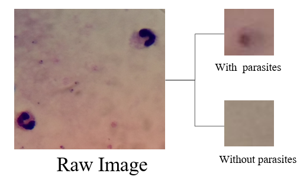
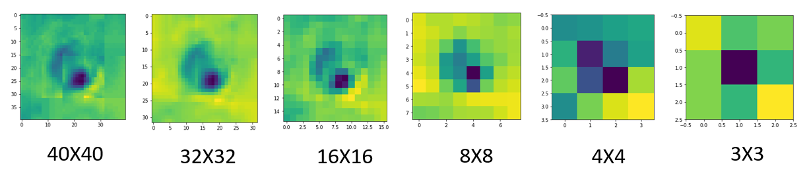

 
|
The diagnosis of malaria through conventional microscopy is a traditional and efficient method. Machine learning has been involved in biomedical filed for many years and developed rapidly, lots of research use this method to obtain a more efficiency way to detect the plasmodium parasites in the thick blood smear. The resolutions of images which get from the conventional microscopy are usually not super high. This project will modify the resolution of image dataset obtained through conventional microscopy, then interpret and summary the result of classification of images with or without plasmodium parasites. Finally made a conclusion on the effect of image resolutions will bring to the convolutional neural network image classification. |
|
|
| Paper: |
| Code and Data: |